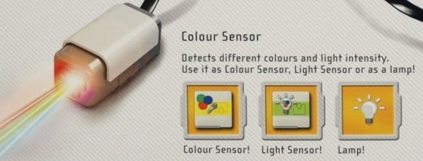

A flyer in today's (6/27/2009) mail included a description of Lego's Mindstorms NXT 2.0 kit. It includes a color sensor that is labeled RGB. The old kit had a light sensor, that really was seeing infra-red. Should be interesting. It looks like it either has three lamps or three detectors. Don't expect that it will be a leg up this FLL season. Expect it will be just short of required in 2010.
The nxtblogspot had more information on the NXT 2.0 Color Sensor.
(Information from the Junior Mindstorms Developer Program, JMDP)
Content disappeared during the redesign of the HTK site. Thankfully, Google cached some of it.
Why didn't we win the FLL programming award?
NXT-G MyBlocks and SaveAs can be trouble.
Copy and Paste is too easy and a look at the WaitForLight block.
Parameterized NXT-G Code solves a common problem when a new robot goes backwards.
1999 A GEMS team wrote these RoboLab programs before learning how to write a SubVI.
February 2009
Why Johnny Can't Program was an attempt to prove that programming is very simple, yet solving even simple problems is difficult. I don't think it impressed anyone.
Slides for a 3.5 hour course with 3 Labs. The build diagrams for the class robot are here.
Slides for FLL Programming 101 rewritten for those using EV3 software on the NXT brick.
April 2000
Robotics - a GEMS presentation and RoboLab programs presented at Augsburg College.